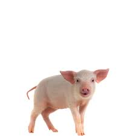

MALACKA

A házisertés, sertés vagy disznó (Sus scrofa domestica) a disznófélék családjába tartozó vaddisznó (Sus scrofa) háziasított formája.
Eurázsiából származik.[1] A köznyelv gyakran falánk és piszkos állatként említi, azonban a valóság az, hogy csupán bezárva nem képes szabadon élő társaihoz hasonlóan tisztán tartani magát,
emellett pedig rendkívül magas intelligenciával rendelkezik, igényli az ember társaságát és igen tanulékony.
Egyéb elnevezései: mali, diszni, töfi, röfi, töffencs...
CICA
 A macska, más néven házi macska (Felis silvestris catus) kisebb termetű húsevő emlős, amely a ragadozók rendjén belül a macskafélék (Felidae) családjának Felis neméhez és vadmacska (Felis silvestris) fajához tartozik.
A macska, más néven házi macska (Felis silvestris catus) kisebb termetű húsevő emlős, amely a ragadozók rendjén belül a macskafélék (Felidae) családjának Felis neméhez és vadmacska (Felis silvestris) fajához tartozik.
A vadmacska alfaja. Ügyes ragadozó, több mint 1000 faj tekinthető a zsákmányának.
Emellett meglehetősen intelligens, beidomítható egyszerű parancsok végrehajtására vagy szerkezetek működtetésére – illetve képes önállóan is kisebb feladatok betanulására.
Egyéb elnevezései: miau, macsek, cicmic...
MALACICA
A linkre kattintva megnézheted!
[malaccica]